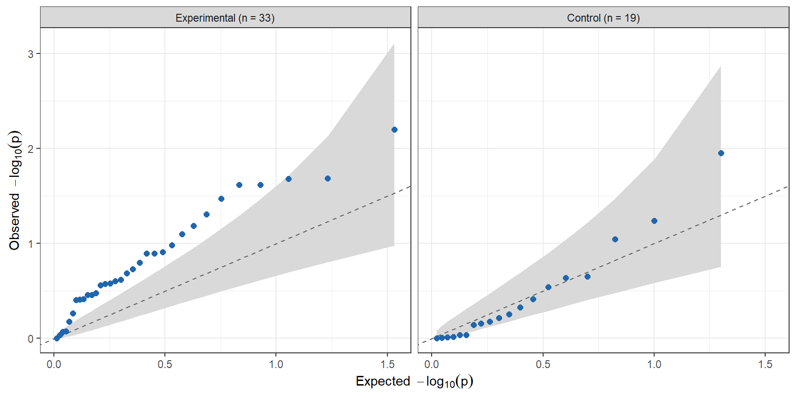
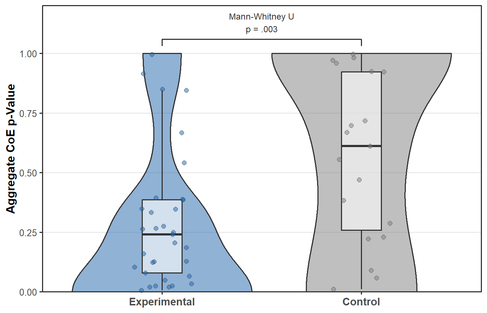

Each condition has three change of evidence measures (Maximum BF, BF Energy and FFT Amplitude Sum), all computed on the same Bayes factor trajectory. Because they capture related aspects of that trajectory and are highly intercorrelated, the primary analysis combines them per condition into a single aggregate CoE p-value, the harmonic mean of the three component p-values (details).
The aggregate p-values are combined across conditions, separately for experimental and control conditions, with two methods. The inverse chi-square method weights each condition by its degrees of freedom (N − 1), so that larger studies count more. Fisher’s method weights all conditions equally and serves as a robustness check against the argument that data collection was selectively extended in studies with a noticeable BF, which would give exactly those studies more weight in the weighted analysis.
If the observed trajectories do not differ from chance, the aggregate p-values are approximately uniformly distributed (as the null simulations confirm, see CoE measures), and about 5% of conditions should fall below .05.
Table 1: Aggregate CoE p-values combined across conditions.
Conditions
p < .05
Inverse Chi-Square (Weighted)
Fisher (Unweighted)
Experimental
33
7 (21%)
χ²(41493) = 42238.1, p = .005
χ²(66) = 119.6, p = < .001
Control
19
1 (5%)
χ²(27584) = 27298.6, p = .888
χ²(38) = 36.2, p = .552
Comparison with the Simulations
If the conditions contain no more temporal structure than chance, their aggregate p-values lie on the diagonal, with the k-th smallest of n p-values close to k / (n + 1). The grey band marks the pointwise 95% range expected under the null. Points above the band indicate more small p-values, and thus more non-random evidence dynamics, than the simulations produce.
qq <-function(d, label) { n <-nrow(d); i <-seq_len(n)data.frame(group =sprintf("%s (n = %d)", label, n),expected =-log10(i / (n +1)),observed =-log10(sort(d$p_agg)),lo =-log10(qbeta(.975, i, n - i +1)),hi =-log10(qbeta(.025, i, n - i +1)))}qd <-rbind(qq(exp, "Experimental"), qq(con, "Control"))qd$group <-factor(qd$group, levels =unique(qd$group)) # Experimental leftggplot(qd, aes(expected, observed)) +geom_ribbon(aes(ymin = lo, ymax = hi), fill ="grey85") +geom_abline(slope =1, intercept =0, linetype ="dashed", colour ="grey40") +geom_point(size =2, colour = grp_cols[["Experimental"]]) +facet_wrap(~ group) +labs(x =expression(Expected~~-log[10](p)),y =expression(Observed~~-log[10](p))) +theme_bw(base_size =11)

Figure 1: Observed aggregate CoE p-values against the uniform distribution expected under the null, for experimental and control conditions (−log₁₀ scale, so that small p-values lie to the right and top). Grey band, pointwise 95% range under the null.
Experimental vs. Control Conditions
The comparison of the two condition types is the critical test of the volatile effect hypothesis. If the observed patterns were only statistical artefacts of the analysis, the aggregate p-values should be distributed alike in both, since both pass through the same procedures. If experimental conditions carry volatile effects, their aggregate p-values should be systematically smaller. We test this with a one-sided Mann-Whitney U test and, as a robustness check, with a permutation test on the difference in Fisher chi-square statistics between the two condition types, reassigning the condition labels at random 10,000 times.

Figure 2: Aggregate CoE p-values of experimental and control conditions. Violins show the distribution, boxes the median and interquartile range, points the individual conditions.
The median aggregate p-value is 0.241 in experimental and 0.611 in control conditions.
Sensitivity to Shared Participants
The combination methods assume independent p-values, but some conditions reuse the same participants, namely the two time points of the Monks study, the three median splits of the Psychoscanner sample and the experimental and control columns of the Priming studies. The table below repeats the combination with only the first condition of each participant sample.
Table 2: Aggregate CoE p-values combined across conditions, one condition per participant sample.
Conditions
p < .05
Inverse Chi-Square (Weighted)
Fisher (Unweighted)
Experimental
29
7 (24%)
χ²(38419) = 39067.4, p = .010
χ²(58) = 107.3, p = < .001
Control
15
1 (7%)
χ²(23471) = 23068.9, p = .969
χ²(30) = 24.6, p = .744
Individual Measures (Exploratory)
NoteMeta-Analysis of the Three Component Measures
The component measures were the primary analysis in the first two versions of this report. They are kept as an exploratory breakdown because they show which aspect of the trajectory drives a result, although testing all three separately repeats largely the same information three times.
comp <-function(d, label) {do.call(rbind, lapply(c("MaxBF p", "Energy p", "FFT p"), function(col) { p <-pmax(d[[col]], 1/1001) # a component p of 0 cannot enter log() w <-invchisq(p, k = d$N -1); f <-sumlog(p)data.frame(Conditions = label,`Inverse Chi-Square (Weighted)`=sprintf("χ²(%d) = %.1f, p = %s", w$df, w$chisq, fmt_p(w$p)),`Fisher (Unweighted)`=sprintf("χ²(%d) = %.1f, p = %s", f$df, f$chisq, fmt_p(f$p)),check.names =FALSE) }))}ct <-rbind(comp(exp, "Experimental"), comp(con, "Control"))ct <-cbind(Measure =rep(c("Maximum BF", "BF Energy", "FFT Amplitude Sum"), 2), ct)kable(ct, align ="llcc", row.names =FALSE) |>kable_styling(full_width =FALSE)
Table 3: Component p-values combined across conditions (inverse chi-square weighted by N − 1, Fisher unweighted).
Measure
Conditions
Inverse Chi-Square (Weighted)
Fisher (Unweighted)
Maximum BF
Experimental
χ²(41493) = 41321.4, p = .724
χ²(66) = 113.9, p = < .001
BF Energy
Experimental
χ²(41493) = 42154.2, p = .011
χ²(66) = 120.8, p = < .001
FFT Amplitude Sum
Experimental
χ²(41493) = 41991.1, p = .042
χ²(66) = 118.9, p = < .001
Maximum BF
Control
χ²(27584) = 18482.7, p = 1.000
χ²(38) = 38.0, p = .467
BF Energy
Control
χ²(27584) = 27129.3, p = .974
χ²(38) = 31.1, p = .777
FFT Amplitude Sum
Control
χ²(27584) = 27087.5, p = .983
χ²(38) = 35.5, p = .584
Component p-values of 0 (no simulation as extreme as the data) are set to 1/1001 before combining, the smallest value 1,000 simulations can resolve.
Earlier versions passed the p-values of the two-sided Smokers 1 conditions through two2one(), which halves them. That conversion applies to p-values of two-sided tests, whereas CoE p-values are one-tailed exceedance probabilities already, computed against simulations that use the same two-sided Bayes factor. It is no longer applied.